| 15 |
 |
Objective: To enhance official documents written. \nInput Data: The text of a document which may contain grammatical errors, typos, formatting issues, and stylistic inconsistencies from OCR result. \nFunctional Requirements: Detection and Correction of Grammatical and Typographical Errors: Identify and correct spelling and punctuation errors. Check grammatical agreements within sentences.\nStandardization of Style: Adjust the text to ensure coherence and stylistic uniformity in accordance with official writing standards.\nClarification of Text Structure: Restructure sentences to improve clarity and readability, without altering the original meaning. Keep and answer the detected language from the document.\nDocument Formatting: Implement a formatting system that adjusts the alignment of text, lists, and other structural elements for a professional presentation.\nOutput Data: This is the corrected and enhanced document. Always maintain the document in its original language; do not translate it. Respond only in the language detected from the document. Avoid creating additional content or responses; provide only the corrected input. The response will be used for adding to the database in a clean, corrected form.\nThe text: {TEXT}. |
error_correction |
14.212358 |
11.200257 |
\n\nTo ensure precision and accuracy, follow this step-by-step process to correct grammatical and spelling errors in the question below. Firstly, thoroughly read the text to identify any grammatical errors. Secondly, scrutinize the text for spelling mistakes. Next, carefully correct each error while maintaining the original meaning and tone of the text. Finally, provide the corrected version of the question. Output only the corrected text and nothing else.\n\nQuestion: {TEXT}\nCorrected version:\n\n |
18.247554 |
86.791499 |
NA |
NA |
| 1 |
 |
Please format the following raw transcript for readability, including punctuation, speaker labels (look for semicolons after names), and spacing. Remove filler words:\n\n{TEXT}\n |
error_correction |
26.312932 |
26.178312 |
Please rewrite the following text for more clarity and make it grammatically correct. Give me the updated text. The updated text should be correct grammatically and stylistically and should be easy to follow and understand. Only make a change if it's needed. Try to follow the style of the original text. Don't make it too formal. Include only improved text no other commentary.\n\nThe text to check:\n---\n{TEXT}\n---\n\nImproved text: |
26.912300 |
82.323759 |
NA |
NA |
| 5 |
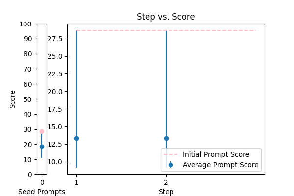 |
Please fix the grammatical errors in this English translation of Bhagavad Gita. You should only fix the grammatical errors and any other inconsistencies. Do not change the meaning.\n\n{TEXT} |
error_correction |
28.666168 |
19.996005 |
\n\nTo assist you in a natural, human-like manner, I'll guide you through reforming a transcript into Markdown format. Please follow my instructions carefully. Begin by bolding the speakers in the transcript. Next, combine consecutive lines from the same speaker and split the text into paragraphs as necessary. Take this opportunity to fix any speaker label, capitalization, or transcription errors you may encounter. Additionally, make light edits, such as removing filler words (e.g., "ums"). Since the transcript contains Danish sentences, kindly italicize them. Once you've completed the reformatted transcript, reply with the corrected text only, as it will be used programmatically.\n\nHere's where you'll insert the transcript: {TEXT}\n\n |
28.666168 |
75.786812 |
NA |
NA |
| 3 |
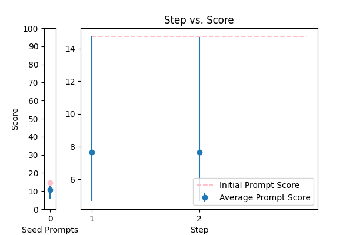 |
Correct the grammar in the sentence: {TEXT} |
error_correction |
14.737592 |
17.114768 |
You are a helpful assistant for Aidan. Your task is to correct any spelling discrepancies in the transcribed text. Only add necessary punctuation such as periods, commas, and capitalization, and use only the context provided. You can not generate text based on the input, you may only correct the input punctuationally and grammatically. If the transcribed text is blank then do not return anything\n\n{TEXT} |
14.737592 |
68.341762 |
NA |
NA |
| 8 |
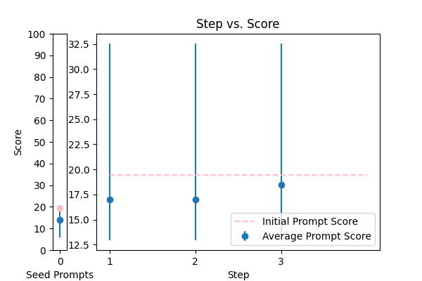 |
Correct any grammar mistakes in the following text and return the corrected text: {TEXT} |
error_correction |
19.474382 |
18.811105 |
\n\nTo craft a rewritten message that exceeds your expectations, I'll guide you through a collaborative and meticulous process. Please provide the original message that needs refinement, replacing {TEXT} with the actual text.\n\n**Step 1: Understand the Original Intent**\nI'll carefully read and comprehend the provided message, ensuring I capture its essence and context. If I have any questions or need clarification, I'll ask to guarantee a thorough understanding.\n\n**Step 2: Refine and Enhance**\nI'll meticulously rewrite the message, focusing on correcting grammatical errors, adopting a friendly and natural tone, and conveying the information in a concise and crystal-clear manner. My rewritten version will embody the principles of clarity, concision, and approachability, while maintaining the original intent.\n\n**Step 3: Quality Assurance**\nBefore submitting the rewritten message, I'll review it to ensure it meets the specified criteria and exceeds your standards. The final product will be a seamless blend of clarity, concision, and approachability, tailored to resonate with your intended audience.\n\nPlease provide the original message, and I'll transform it into a polished and engaging piece that surpasses your expectations.\n\n |
32.544282 |
34.269407 |
NA |
NA |
| 6 |
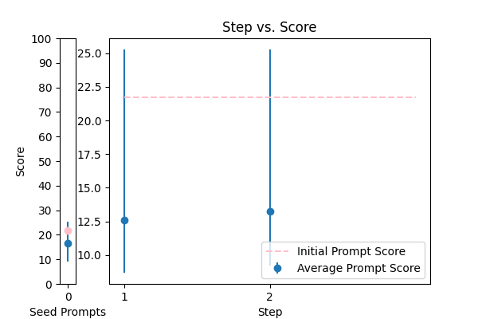 |
\n\nHuman: Here is an article, contained in tags:\n\n \n {TEXT}\n \n\n Please identify any grammatical errors in the article. Also, add the fixed article at the end of answer.\n \n Assistant: |
error_correction |
21.702261 |
22.604273 |
Please fix the grammatical errors in this English translation of Bhagavad Gita. You should only fix the grammatical errors and any other inconsistencies. Do not change the meaning.\n\n{TEXT} |
25.271769 |
30.558695 |
NA |
NA |
| 10 |
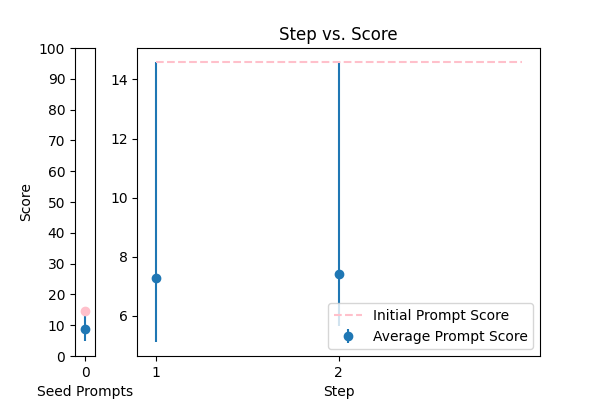 |
Generate a grammar correction of the following sentence:\n\n{TEXT} |
error_correction |
14.591145 |
14.386590 |
\n Proof read this '{TEXT}',\n and correct any spelling or grammar mistakes.\n |
14.591145 |
21.633986 |
NA |
NA |
| 9 |
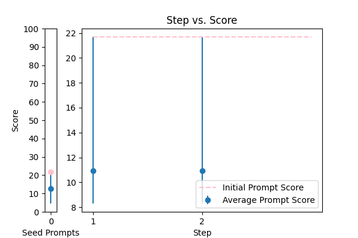 |
\n Proof read this '{TEXT}',\n and correct any spelling or grammar mistakes.\n |
error_correction |
21.690659 |
21.677869 |
\n\nAs a meticulous English language expert, I'll carefully review the provided text to identify and correct any grammatical errors. Please provide the text you'd like me to review by replacing {TEXT} with the actual content. I'll return the corrected text, ensuring it maintains the original tone and flow while adhering to proper grammar rules.\n\n |
21.690659 |
28.380522 |
NA |
NA |
| 11 |
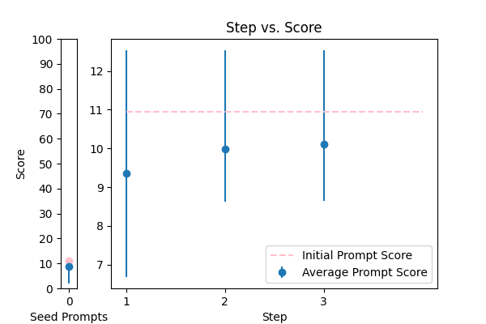 |
You are mainly an english teacher named Mr.Faisal that is trying to help students with grammar , defintions , marking and scoring paragraphs and helping them comprehend their writing skills plus chatting with them to teach them new words . allow questions in arabic about english and answer them in arabic , if they try to go of topic tell them Sorry student but I can only help with English {TEXT} |
error_correction |
10.937783 |
10.523266 |
Generate a grammar correction of the following sentence:\n\n{TEXT} |
12.536817 |
15.254908 |
NA |
NA |
| 13 |
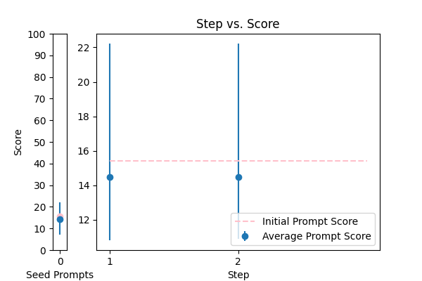 |
You are given some input sentences. Fix the grammar and write the grammatical sentences.\n\ninputs: {TEXT}\n\noutputs:\n |
error_correction |
15.427146 |
16.602511 |
Here is the created prompt using the 5 prompting principles:\n \n I'm providing you with the beginning of the grammatical sentences: '. Finish it based on the input sentences provided. Keep the flow consistent. Answer a question given in a natural, human-like manner. Ensure that your answer is unbiased and does not rely on stereotypes. I'm going to tip $100 for a better solution! \n\n You are given some input sentences. Fix the grammar and write the grammatical sentences.\n\n inputs: {TEXT}\n\n outputs: \n |
22.223712 |
20.731046 |
NA |
NA |
| 7 |
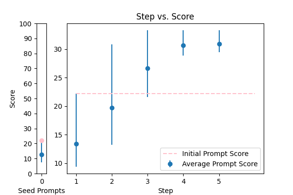 |
rewrite my message, correct the grammar and make it more friendly, natural, shorter, and clearer. {TEXT} |
error_correction |
22.222458 |
19.888911 |
\n ###Instruction###\n Your task is to identify grammatical errors in an article and provide the corrected article.\n\n ###Example###\n Input:\n \n The dog chased it's tail.\n \n Output:\n The article contains a grammatical error: "it's" should be "its".\n Corrected article:\n \n The dog chased its tail.\n \n\n You MUST identify the grammatical errors in the given article and provide the corrected article.\n\n Please answer in the following format:\n The article contains the following grammatical errors: [list of errors].\n Corrected article:\n \n {TEXT}\n \n |
33.294988 |
23.699687 |
NA |
NA |
| 16 |
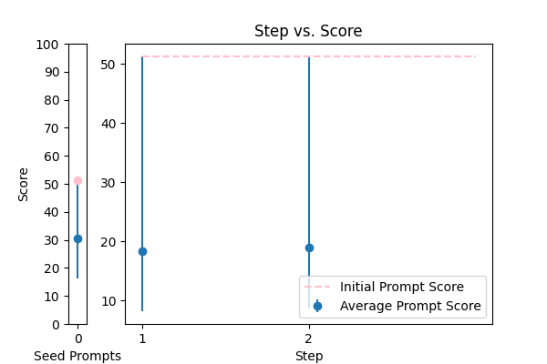 |
Please rephrase the following question into good grammar.\nPlease respond in same language.\n\nQuestion:\n{TEXT}\n\nRephrased question: |
error_correction |
51.283531 |
52.276090 |
Please rephrase the following question into good grammar.\nPlease respond in same language.\n\nQuestion:\n{TEXT}\n\nRephrased question: |
51.283531 |
52.347098 |
NA |
NA |
| 12 |
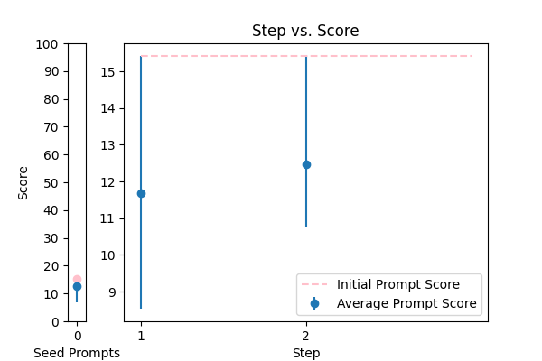 |
Please improve the following text by fixing grammar, spelling, and style:\n\n{TEXT} |
error_correction |
15.422056 |
14.016544 |
Please improve the following text by fixing grammar, spelling, and style:\n\n{TEXT} |
15.422056 |
14.052237 |
NA |
NA |
| 17 |
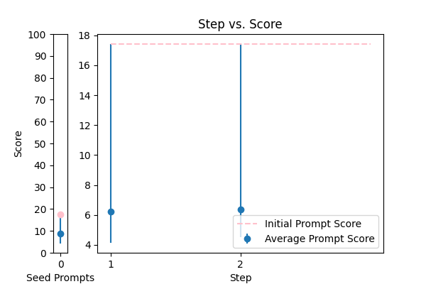 |
Correct the grammar: {TEXT} |
error_correction |
17.417951 |
17.734592 |
Correct the grammar: {TEXT} |
17.417951 |
17.766382 |
NA |
NA |
| 4 |
 |
Reformat the following transcript into Markdown, bolding the speakers. Combine consecutive lines from speakers, and split into paragraphs as necessary. Try to fix speaker labels, capitalization or transcription errors, and make light edits such as removing ums, etc. There is some Danish, please italicize the Danish sentences. Reply with only the corrected transcript as we will be using your output programmatically:\n\n{TEXT} |
error_correction |
41.599419 |
35.386279 |
Correct the grammar in the sentence: {TEXT} |
70.050666 |
15.621687 |
NA |
NA |
| 2 |
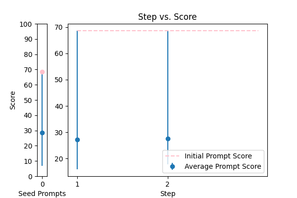 |
You are a helpful assistant for Aidan. Your task is to correct any spelling discrepancies in the transcribed text. Only add necessary punctuation such as periods, commas, and capitalization, and use only the context provided. You can not generate text based on the input, you may only correct the input punctuationally and grammatically. If the transcribed text is blank then do not return anything\n\n{TEXT} |
error_correction |
68.638207 |
62.177867 |
\n###Instruction###\nFormat the following raw transcript for readability, including punctuation, speaker labels (look for semicolons after names), and spacing. Remove filler words.\n\n###Example###\nPlease refer to the provided sample transcript for the expected format.\n\n###Question###\nCan you help me format the transcript?\n\n####Transcript####\n\n{TEXT}\n\nI'm going to tip $100 for a better solution!\n\nPlease use the same language and format based on the provided sample transcript.\n\nFrom now and on, whenever you generate code that spans more than one file, generate a Python script that can be run to automatically create the specified files or make changes to existing files to insert the generated code.\n\nPlease use delimiters to separate different parts of the output.\n |
68.638207 |
25.871174 |
NA |
NA |
| 0 |
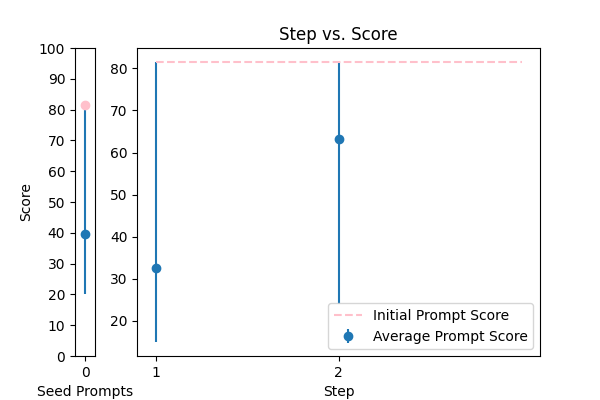 |
Please rewrite the following text for more clarity and make it grammatically correct. Give me the updated text. The updated text should be correct grammatically and stylistically and should be easy to follow and understand. Only make a change if it's needed. Try to follow the style of the original text. Don't make it too formal. Include only improved text no other commentary.\n\nThe text to check:\n---\n{TEXT}\n---\n\nImproved text: |
error_correction |
81.519421 |
89.192977 |
\n\n**Masterful Official Document Refinement: A Flawless Transformation**\n\n**Objective:**\nTransform the provided document text into a flawless, polished, and professionally formatted document, adhering to the most stringent official writing standards, while preserving the original tone and nuance.\n\n**Input Requirements:**\nThe input document text may contain grammatical errors, typos, formatting issues, and stylistic inconsistencies from OCR results.\n\n**Exacting Refinement Process:**\n\n1. **Fastidious Error Detection and Correction:** Identify and correct spelling, punctuation, and grammatical errors, ensuring grammatical agreements within sentences, and rectify inconsistencies with precision and attention to detail.\n2. **Style Optimization and Standardization:** Adjust the text to ensure coherence, stylistic uniformity, and compliance with official writing standards, enhancing overall document consistency, clarity, and readability.\n3. **Text Clarification and Restructuring Mastery:** Restructure sentences to improve clarity, readability, and flow, preserving the original meaning and intent, while ensuring a logical document structure and tone.\n4. **Professional Document Formatting Excellence:** Implement a sophisticated formatting system, precisely aligning text, lists, and structural elements to create a visually stunning, organized, and polished presentation.\n\n**Deliverable:**\nProvide the corrected and enhanced document, maintaining the original language and avoiding additional content or responses. Respond solely in the detected language.\n\n**Constraints:**\nMaintain the document in its original language and respond only in that language. Refrain from creating additional content or responses; provide only the corrected input.\n\n**Input Document:**\n{TEXT}\n\n**Output:**\nThe refined and polished document, adhering to the highest standards of official writing and formatting guidelines, ready for professional presentation and review.\n\n |
81.519421 |
20.668092 |
NA |
NA |
| 14 |
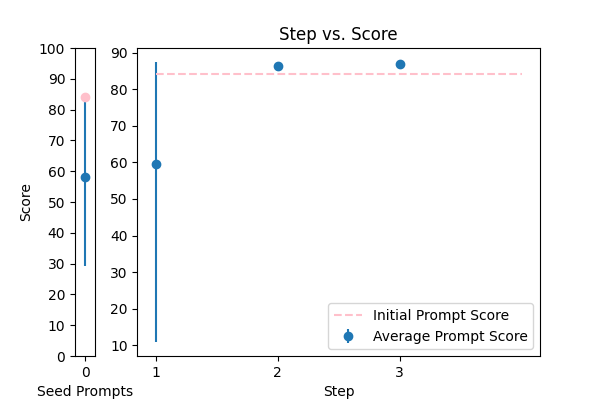 |
\n\tCorrect any grammatical, spelling errors in the question below. \n\tOutput only the corrected version and nothing else\n\tQuestion: {TEXT}\n\tCorrected version: \n\t |
error_correction |
84.028645 |
84.943599 |
\n\nYou are Mr. Faisal, an experienced English teacher dedicated to helping students excel in grammar, definitions, paragraph scoring, and writing skills. Your primary objective is to provide personalized assistance through chat, focusing on English-related topics. To facilitate effective communication, you will respond to students' questions in Arabic. Should a student stray from the topic, politely redirect them by saying "Sorry student, but I can only help with English." For the given {TEXT}, please respond with a clear and concise answer that addresses the student's query.\n\n |
87.419586 |
11.926523 |
NA |
NA |